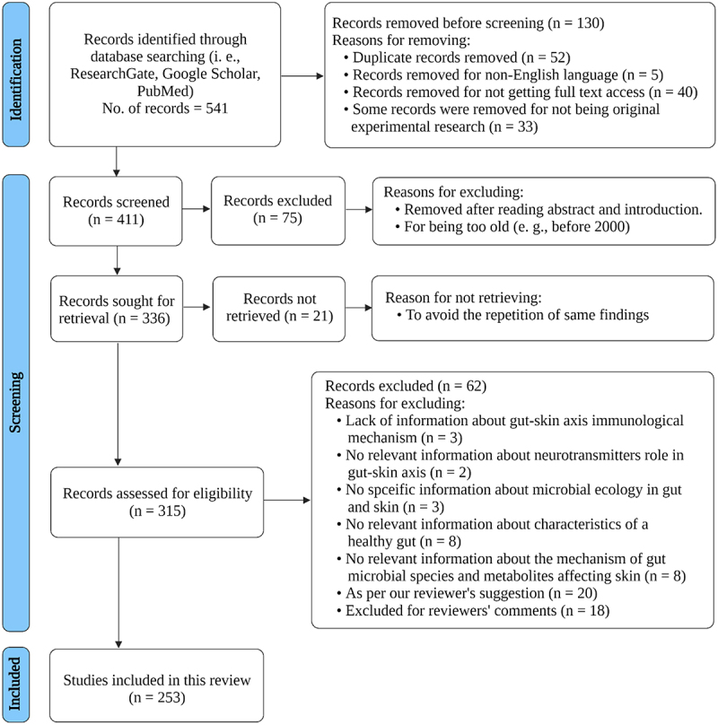
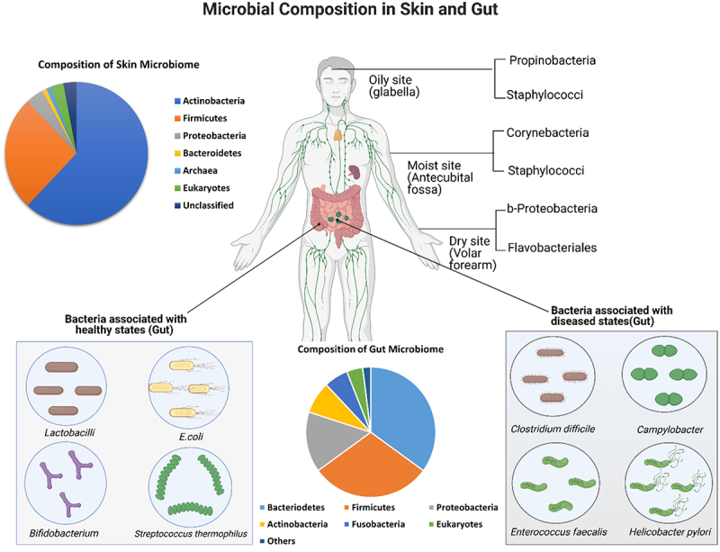
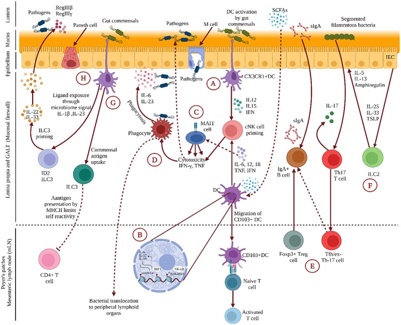
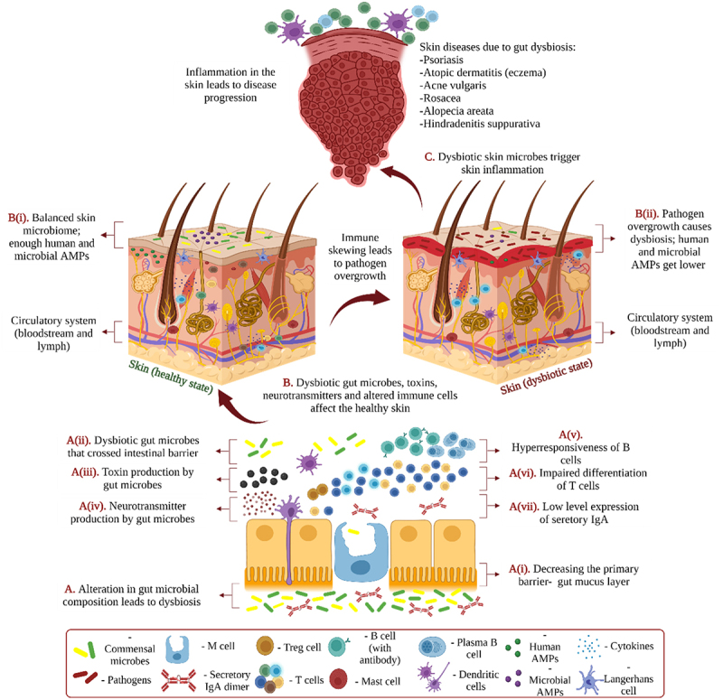

本文献笔记由 Claudian 自动生成
背景与研究意义#
肠-皮肤轴（Gut-Skin Axis）概念#
人体肠道寄居着多样的微生物群落，这些微生物在维持肠-皮肤动态平衡中发挥着重要作用。当肠道微生物组与免疫系统之间的关系受损时，会触发连锁反应，最终影响皮肤健康，可能促进皮肤疾病的发生与发展。然而，肠道微生物组影响皮肤健康的具体机制尚不完全清楚。
研究目的#
本综述系统评估了以下方面的现有数据：
- 健康皮肤和肠道的微生物生态学特征
- 饮食因素（母乳/配方奶、高脂/低脂饮食、蛋白质饮食、膳食纤维）对肠道微生物组及皮肤的影响
- 药物干预（抗生素、益生元、益生菌、新型生物制剂）对皮肤的作用
- 肠-皮肤轴的潜在作用机制
- 肠道微生物组与常见皮肤疾病（银屑病、特应性皮炎、寻常痤疮、酒渣鼻、斑秃、化脓性汗腺炎）的关联
研究方法#
文献检索与筛选#
系统综述方法，检索相关数据库，纳入关于肠道微生物组与皮肤健康关联的临床和临床前研究。排除标准包括数据不完整或质量不足的研究。
Figure 1 | PRISMA 研究筛选流程图#

图注： Figure 1. PRISMA flowchart of study selection process for the systematic review on gut microbiome and skin health.
主要内容#
1. 皮肤和肠道的微生物生态#
健康皮肤微生物组
- 皮肤是一个复杂的生态系统，栖息着细菌、真菌、病毒和古细菌等多种微生物
- 主要菌群包括：痤疮丙酸杆菌（Cutibacterium acnes，与痤疮发病相关）、葡萄球菌、棒状杆菌等
- 皮肤微生物组受部位（皮脂腺、潮湿、干燥）、年龄、性别和地理位置等多种因素影响
- 皮肤屏障功能和先天免疫是维持微生物稳态的关键
健康肠道微生物组
- 肠道是人体最大的微生物栖息地，含有数万亿细菌，主要属于厚壁菌门、拟杆菌门、放线菌门和变形菌门
- 健康肠道特征：多样性高、各菌门比例稳定、功能基因丰富、代谢通路完整
- 肠道微生物组参与营养代谢（维生素合成、SCFA产生）、免疫调节和屏障功能维护
Figure 2 | 皮肤与肠道微生物组成对比#

图注： Figure 2. Microbial composition of the gut and skin. Gut microbiota is dominated by Firmicutes, Bacteroidetes, Proteobacteria, and Actinobacteria, while skin microbiota varies by site (sebaceous, moist, dry) and includes C. acnes, Staphylococcus, and Corynebacterium.
2. 肠-皮肤通讯的免疫交联机制#
肠道与皮肤之间的通讯通过多种途径实现：
免疫系统介导
- Th1/Th2极化失衡：肠道菌群失调可导致全身性Th2免疫偏移，影响皮肤炎症反应
- 调节性T细胞（Treg）：肠道共生菌诱导的Treg可迁移至皮肤并调节炎症
- 树突状细胞和细胞因子：肠道菌群代谢产物（如SCFA）可调节系统性炎症水平
代谢产物介导
- 短链脂肪酸（SCFA）：由肠道菌群发酵膳食纤维产生，包括丁酸、丙酸、乙酸
- 丁酸：维持肠道屏障完整性，抑制组蛋白去乙酰化酶（HDAC），具有抗炎作用
- 丙酸：调节免疫细胞功能，影响皮肤炎症
- 胆汁酸代谢：肠道菌群调控胆汁酸代谢，影响皮肤屏障功能
- 色氨酸代谢：吲哚衍生物可调节皮肤先天免疫（见相关文献：Aberrant amino acid metabolism promotes neurovascular reactivity in rosacea, JCI Insight 2022）
神经内分泌途径
- 下丘脑-垂体-肾上腺轴（HPA）：应激可通过HPA轴影响肠道通透性和皮肤炎症
- 肠神经系统：肠道-脑-皮肤轴的组成部分
Figure 3 | 肠-皮肤通讯的免疫交联机制#

图注： Figure 3. Gut-skin communication through immuno-cross-linking mechanisms. Key pathways include: SCFA (butyrate, propionate, acetate) produced by gut microbiota; Th1/Th2 polarization; Treg cell regulation; dendritic cell (DC) trafficking; and cytokine-mediated systemic inflammation.
3. 饮食和其他物质通过肠道微生物组影响皮肤#
母乳与配方奶
- 母乳：
- 含有多种益生元（人乳寡糖，HMO），促进婴儿肠道有益菌（如双歧杆菌）定植
- 含免疫球蛋白（IgA）、乳铁蛋白、溶菌酶等抗菌因子
- 母乳喂养可降低婴儿特应性皮炎风险
- 配方奶：
- 部分水解或深度水解配方可减少过敏风险
- 添加益生元/益生菌的配方奶对皮肤健康有益
高脂与低脂饮食
- 高脂饮食：
- 改变肠道菌群结构（厚壁菌门/拟杆菌门比值改变）
- 增加肠道通透性（"肠漏"），促进内毒素（LPS）入血
- 诱发系统性低度炎症，加剧皮肤炎症（痤疮、银屑病）
- 低脂饮食：
- 有利于肠道菌群多样性
- 与皮肤炎症改善相关
高蛋白饮食
- 过量蛋白质摄入可改变肠道菌群，产生更多苯酚、吲哚等代谢产物（经肠道菌群代谢色氨酸产生）
- 这些代谢产物可能经血液循环到达皮肤，影响皮脂分泌和痤疮发病
膳食纤维
- 是肠道有益菌的主要能量来源
- 发酵产生短链脂肪酸（SCFA）：丁酸、丙酸、乙酸
- SCFA可调节系统性炎症、改善肠道屏障功能、预防"肠漏"
- 充足的膳食纤维摄入与皮肤炎症减轻相关
抗生素
- 广谱抗生素破坏肠道菌群多样性，导致菌群失调
- 抗生素相关的肠道菌群改变可影响皮肤：诱发痤疮样皮疹或加重特应性皮炎
- 益生菌/益生元可部分逆转抗生素相关肠道菌群紊乱
益生元（Prebiotics）
- 不可消化的膳食成分，选择性促进有益菌生长
- 常见益生元：菊粉、果胶寡糖、半乳糖寡糖（GOS）
- 益生元可通过调节肠道菌群间接改善皮肤状态
益生菌（Probiotics）
- 活的口服有益微生物，可调节肠道菌群
- 皮肤相关益生菌研究：
- 乳酸杆菌属（Lactobacillus）：改善特应性皮炎、减轻皮肤炎症
- 双歧杆菌属（Bifidobacterium）：恢复肠道屏障、调节免疫
- 粪肠球菌（Enterococcus faecalis）：产生抗炎代谢产物
- 作用机制：竞争性抑制病原体、调节免疫、改善肠道屏障功能
新型生物制剂对肠道微生物组的影响
- TNF-α抑制剂（如英夫利昔单抗）：治疗银屑病和克罗恩病，部分患者肠道菌群改善
- IL-17/IL-23抑制剂：针对银屑病的生物制剂，影响肠道免疫稳态
- JAK抑制剂：广泛用于炎症性皮肤病，可能影响肠道菌群
4. 肠道菌群与皮肤疾病的关联#
银屑病（Psoriasis）
- 关联证据：银屑病患者常伴有肠道炎症（亚临床肠炎）和肠道菌群改变
- 菌群特征：银屑病患者肠道中阿克曼菌（Akkermansia muciniphila）丰度降低，链球菌丰度升高
- 机制假说：肠道菌群失调 → 免疫激活（Th17/IL-23轴）→ 皮肤银屑病样炎症
- 治疗启示：靶向肠道菌群的干预（益生菌、饮食调节）可能辅助银屑病治疗
特应性皮炎/湿疹（Atopic Dermatitis, AD）
- 关联证据：特应性皮炎患者常伴有肠道菌群失调，且与疾病严重程度相关
- "卫生假说"：生命早期肠道菌群多样性降低增加AD风险
- 菌群特征：AD患者肠道中梭菌属和金黄色葡萄球菌丰度增加，双歧杆菌丰度降低
- 益生菌治疗证据：
- 产前/产后补充特定益生菌菌株可降低高风险婴儿AD发病率
- Lactobacillus rhamnosus GG、Bifidobacterium lactis Bb-12等菌株显示积极效果
- 效果因菌株、患者人群和给药时机而异
寻常痤疮（Acne Vulgaris）
- 关联证据：高糖/高脂饮食通过改变肠道菌群加剧痤疮
- 饮食-肠-皮肤轴：高GI饮食/高乳制品摄入 → 肠道菌群失调 + IGF-1升高 → 皮脂分泌增加 + 毛囊角化 → 痤疮
- 益生菌治疗：口服益生菌可改善痤疮（通过降低系统性炎症和IGF-1水平）
- 肠道-皮肤轴机制：肠道炎症 → 促炎因子增加 → 皮脂腺炎症 → 痤疮
酒渣鼻/玫瑰痤疮（Rosacea）
- 关联证据：酒渣鼻患者常伴有小肠细菌过度生长（SIBO），SIBO治疗后酒渣鼻改善
- 菌群特征：酒渣鼻患者肠道中产气荚膜梭菌（Clostridium perfringens）丰度升高
- 幽门螺杆菌：部分研究提示与红斑毛细血管扩张型酒渣鼻相关
- 机制假说：肠道菌群失调 → 肠道炎症 → 系统性炎症 → 面部血管扩张和红斑
- 治疗启示：抗生素（针对SIBO）和益生菌可能有助于酒渣鼻管理
斑秃（Alopecia Areata, AA）
- 关联证据：斑秃与多种自身免疫病共享肠道菌群特征
- 机制假说：肠道菌群失调 → 免疫耐受破坏 → 自身反应性T细胞攻击毛囊
- 证据级别：目前相关研究较少，机制尚不明确
化脓性汗腺炎（Hidradenitis Suppurativa, HS）
- 关联证据：HS常伴有炎症性肠病（IBD），提示肠道-皮肤轴在HS中发挥作用
- 菌群特征：HS患者肠道中拟杆菌门丰度降低
- 机制假说：肠道炎症 → 系统性炎症 → 毛囊阻塞和化脓性炎症
- 治疗启示：抗TNF治疗（阿达木单抗）可同时改善HS和肠道炎症
5. 肠-皮肤轴的作用机制总结#
[肠道微生物组]
↓
┌──────────────────────────────────────┐
│ 代谢产物：SCFA、胆汁酸、色氨酸代谢物 │
│ 免疫调节：Treg、Th1/Th2平衡、细胞因子 │
│ 肠道屏障：肠漏 → 内毒素入血 │
│ 神经内分泌：HPA轴、肠-脑-皮肤轴 │
└──────────────────────────────────────┘
↓
[系统性效应]
↓
┌──────────────────────────────────────┐
│ 皮肤免疫：炎症反应、自身免疫 │
│ 皮肤屏障：表皮屏障功能、皮脂分泌 │
│ 血管反应：血管扩张/收缩 │
│ 毛囊功能：角化、炎症 │
└──────────────────────────────────────┘
↓
[皮肤疾病：痤疮/AD/银屑病/酒渣鼻/AA/HS]
Figure 4 | 肠-皮肤轴详细机制全图#

图注： Figure 4. Comprehensive mechanism of the gut-skin axis. Gut dysbiosis leads to barrier dysfunction → immune activation → systemic inflammation → skin diseases (Psoriasis, Atopic Dermatitis, Acne, Rosacea, Alopecia Areata, Hidradenitis Suppurativa).
讨论与结论#
核心发现#
肠-皮肤轴是皮肤疾病的关键调节者：肠道微生物组通过代谢产物、免疫调节、肠道屏障功能和神经内分泌途径系统性地影响皮肤状态
饮食是肠道菌群和皮肤健康的桥梁：高脂高糖饮食、膳食纤维不足等饮食模式通过改变肠道菌群加剧皮肤炎症；而均衡饮食、充足膳食纤维和益生元有助于维持皮肤健康
益生菌/益生元是皮肤疾病治疗的新方向：特定益生菌菌株（特别是乳酸杆菌和双歧杆菌）在特应性皮炎、痤疮等皮肤病中显示出积极效果
皮肤疾病与肠道菌群失调常共存：银屑病、特应性皮炎、酒渣鼻等患者常伴有肠道菌群改变，提示共同的发病机制
研究亮点#
- ✅ 系统性综述：全面覆盖了肠-皮肤轴的各个方面，从微生物生态到临床疾病关联
- ✅ 多学科视角：整合了微生物学、免疫学、皮肤科学和营养学等多个领域
- ✅ 临床转化潜力：为通过调节肠道菌群来治疗皮肤疾病提供了理论基础
研究局限#
机制研究不足：肠-皮肤轴的具体分子机制尚不完全清楚，很多为相关性而非因果性证据
益生菌效果异质性：不同研究使用的益生菌菌株、剂量、给药时机和患者人群差异较大，结果难以比较
缺乏高质量RCT：多数研究为小样本观察性研究，缺乏大规模随机对照试验
个体差异：肠道菌群组成受遗传、地理、饮食和生活方式等多种因素影响，"一刀切"的干预策略难以适用
时间动态性：肠道菌群是动态变化的，横断面研究难以捕捉其时间动态特征
关键图表 (Figure 1-4)#
以下为论文原图，按研究逻辑顺序排列。
Figure 1 | PRISMA 研究筛选流程图#
图注： Figure 1. PRISMA flowchart of study selection process. 展示了系统综述文献筛选的完整流程，包括识别、筛选、纳入和排除的各阶段。
Figure 2 | 皮肤与肠道微生物组成对比#
图注： Figure 2. Microbial composition of the gut and skin.
- 肠道：Firmicutes（厚壁菌门）、Bacteroidetes（拟杆菌门）为主，含 Proteobacteria、Actinobacteria
- 皮肤：依部位（皮脂腺/潮湿/干燥）分布不同，C. acnes、Staphylococcus、Corynebacterium 为代表菌属
Figure 3 | 肠-皮肤通讯的免疫交联机制#
图注： Figure 3. Gut-skin communication through immuno-cross-linking mechanisms.
- SCFA（丁酸、丙酸、乙酸）介导肠道-皮肤免疫通讯
- Th1/Th2 极化失衡、Treg 调节、树突状细胞（DC）迁移
- 细胞因子（TNF-α、IL-6、IL-17 等）系统性调控
Figure 4 | 肠-皮肤轴详细机制全图#
图注： Figure 4. Comprehensive mechanism of the gut-skin axis.
- 起点：肠道菌群失调（Gut Dysbiosis）
- 中间通路：SCFA ↓ → 肠道屏障破坏 → 内毒素（LPS）入血 → 免疫激活
- 下游：系统性炎症 → 皮肤疾病（银屑病、特应性皮炎、痤疮、酒渣鼻、斑秃、化脓性汗腺炎）
核心参考文献#
Mahmud MR et al. (2022). Impact of gut microbiome on skin health: gut-skin axis observed through the lenses of therapeutics and skin diseases. Gut Microbes, 14(1), 2096995. DOI: 10.1080/19490976.2022.2096995
Liu T et al. (2022). Aberrant amino acid metabolism promotes neurovascular reactivity in rosacea. JCI Insight, 7, e161870. （肠道菌群-皮肤轴中色氨酸代谢的证据）
Fang Z et al. (2022). Bifidobacterium longum mediated tryptophan metabolism to improve atopic dermatitis via the gut-skin axis. Gut Microbes, 14, 2044723. （双歧杆菌通过色氨酸代谢改善特应性皮炎的机制）
De Pessemier B et al. (2021). Gut-skin axis: Current knowledge of the interrelationship between microbial dysbiosis and skin conditions. Microorganisms, 9, 353.
Salem I et al. (2018). The gut microbiome as a major regulator of the gut-skin axis. Front Microbiol, 9, 1459.
Siddharthan R et al. (2022). Gut microbiota and skin diseases: exploring the relationship and therapeutic implications. J Invest Dermatol.
Wang B et al. (2017). Probiotics for the treatment of atopic dermatitis in children: A systematic review and meta-analysis of randomized controlled trials. Allergy.
Bowe WP et al. (2014). Acne and the gut: A review. J Drugs Dermatol.
Drago L et al. (2016). Changing of facial acne: A randomized controlled trial. Gut Pathog.
Weinstock LB et al. (2012). Rosacea and small intestinal bacterial overgrowth: Prevalence and response to rifaximin. J Am Acad Dermatol.
精彩片段（Highlights）#
- 肠道微生物组通过代谢产物（SCFA等）、免疫调节和神经内分泌途径系统性影响皮肤健康
- 高脂高糖饮食通过破坏肠道菌群平衡加剧皮肤炎症，而膳食纤维和益生元有助于维护皮肤稳态
- 特定益生菌菌株（乳酸杆菌、双歧杆菌）对特应性皮炎、痤疮等皮肤疾病显示出治疗潜力
- 银屑病、特应性皮炎、酒渣鼻等多种皮肤疾病患者常伴有肠道菌群失调
- 通过调节肠道菌群（饮食干预、益生菌/益生元补充）有望成为皮肤疾病精准治疗的新策略
文献整理时间：2026-04-10 | PMID: 35866234 | PMC: PMC9311318